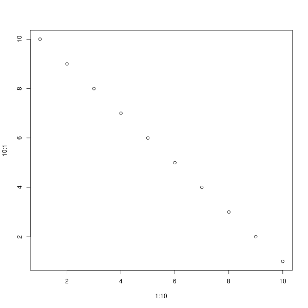

download.file("https://raw.githubusercontent.com/jinhaslab/opendata/main/kwcs/kwcsData6th.rds", "data/kwcsData6th.rds")3 데이터 불러오기
3.1 데이터 업로드
데이터를 불러오는 방법과 저장하는 방법에 대해서 이야기 하겠습니다.
로칼 데이터 불러오기
우선 rstudio 에서 upload 버튼을 사용하는 것입니다. 우측 아래에 있습니다. 여기서 화살표 위로되어 있는 버튼이 업로드 버튼입니다.

업로드 버튼을 눌러서, 파일을 업로드 하는 방식입니다. 가장 많이 사용하는 방식입니다.
웹이 있는 데이터 불러오기
웹에 있는 데이터가 링크가 있다면 다운로드 받는 방법입니다. download.file 이란 함수를 쓰고, 주소와 저장 장소 및 저장이름을 적어 주는 거입니다.
이 자료를 불러오겠습니다.
kwcs = readRDS("data/kwcsData6th.rds")
#head(kwcs)사용설명서도 다운로드 받겠습니다.
download.file("https://raw.githubusercontent.com/jinhaslab/opendata/main/kwcs/pdf3.pdf", "data/kwcs6thkorea.pdf")3.2 데이터 불러오기
3.2.1 CSV 파일
read.csv, write.csv 를 이용합니다. iris 데이터를 이용해서 실습하겠습니다.
data(iris)
write.csv(iris, "data/iris.csv")
iris_import = read.csv("data/iris.csv")data(iris) 이 부분은 R의 내장 데이터셋인 iris를 로드합니다. iris 데이터셋은 150개의 관측값과 5개의 변수 (꽃받침의 길이, 꽃받침의 너비, 꽃잎의 길이, 꽃잎의 너비, 종류)로 구성되어 있습니다. write.csv(iris, "data/iris.csv") 이 부분은 iris 데이터셋을 CSV 파일 형태로 저장합니다. 여기서 “data/iris.csv”는 파일의 경로와 이름을 나타냅니다. 해당 코드는 현재 작업 중인 디렉토리의 data 폴더 내에 iris.csv라는 이름으로 파일을 저장하려고 시도합니다. 만약 data 폴더가 존재하지 않으면 오류가 발생할 수 있습니다. write.csv 함수는 기본적으로 행 이름도 CSV 파일에 저장합니다. 따라서 CSV 파일에는 추가적으로 행 번호가 포함됩니다. iris_import = read.csv("data/iris.csv") 이 부분은 방금 저장한 iris.csv 파일을 다시 R로 읽어들여 iris_import 변수에 저장합니다. read.csv 함수는 기본적으로 첫 번째 행을 변수명으로 간주합니다. 이 때, 위에서 언급했던 추가적으로 저장된 행 번호는 첫 번째 열로 읽히게 됩니다. 이 열의 이름은 일반적으로 X로 지정됩니다. 요약하면, 이 코드는 R의 iris 데이터셋을 CSV 파일로 저장한 다음, 그 파일을 다시 R로 읽어들이는 과정을 보여줍니다.
3.2.2 excel 파일
iris 파일 excel로 저장
먼저, Excel 파일로 저장하기 위해 writexl 패키지가 필요합니다. 그리고 xlsx 파일을 불러오기 위해서는 readxl 패키지가 필요합니다. install.packages를 이용하여 패키지를 설치합니다.
install.packages("writexl")
install.packages("readxl")library(writexl)
library(readxl)iris 데이터셋을 Excel 파일로 저장합니다. 이때 write_xlsx를 이용하고, 저장하고자 하는 데이터, 그리고 저장될 이름을 경로와 함께 저장합니다. write_xlsx 함수는 writexl 패키지에 포함된 함수로, 첫 번째 인수로 받은 데이터 프레임(iris)을 두 번째 인수로 받은 경로(“data/iris_saved.xlsx”)에 Excel 파일로 저장합니다.
# iris 데이터셋을 Excel 파일로 저장
write_xlsx(iris, "data/iris_saved.xlsx")iris_xlsx <- readxl::read_xlsx("data/iris_saved.xlsx")readxl::read_xlsx("iris_saved.xlsx"), read_xlsx 함수는 readxl 패키지에 있는 함수로, 인수로 받은 경로의 Excel 파일을 R의 데이터 프레임으로 불러옵니다. rreadxl::: readxl 패키지의 read_xlsx 함수를 호출하기 위해 패키지 이름과 함께 사용되는 방식입니다. 이렇게 하면 해당 패키지를 라이브러리로 로드하지 않고도 패키지의 함수를 사용할 수 있습니다.
“data/iris_saved.xlsx”: 불러올 Excel 파일의 경로입니다. iris_xlsx: 위 코드에서 불러온 데이터를 저장하는 변수입니다. 불러온 데이터는 이 변수에 저장되므로 후에 iris_xlsx를 사용하여 데이터를 조회하거나 처리할 수 있습니다.
3.2.3 stata, sas, spss 파일
haven 패키지는 주로 SPSS, Stata, SAS와 같은 다른 통계 소프트웨어에서 사용되는 파일 형식을 R에서 읽고 쓰기 위해 사용됩니다. 이번에는 iris 데이터셋과 haven 패키지를 함께 사용하여, 데이터셋을 이러한 형식으로 저장하고 다시 불러오는 실습을 하겠습니다.
install.packages("haven")library(haven)STATA.dta
haven::write_dta(iris, "data/iris_stata.dta")아마 error 메세지가 위에 처럼 발생할 것입니다. 이는 stata에서 사용하는 데이터 형식에에는 변수명에 .이 있는 경우 error를 발생시킬 수도 있기 때문입니다. 나중에 실습하겠지만, 변수 이름을 바꾸는 과정을 통해 . 을 _로 바꾸어 보겠습니다. 즉 현재는 변수 이름이 Sepal.Length 처럼 되어 있는 것을 Sepal_Length로 변경하는 것입니다. gsub을 이용할 것입니다.
names(iris) <- gsub("\\.", "_", names(iris))
write_dta(iris, "data/iris_saved.dta")이후 data 폴더로 가서 외부 반출을 한 다음 stata에서 열어 보면 되겠습니다.


SPASS.sav
# iris 데이터셋을 SPSS 파일로 저장
write_sav(iris, "data/iris_spss.sav")# 저장한 SPSS 파일을 데이터 프레임으로 불러오기
iris_from_spss <- read_sav("data/iris_spss.sav")write_sav: haven 패키지의 함수로, R의 데이터 프레임을 SPSS .sav 형식으로 저장합니다. read_sav: SPSS .sav 형식의 파일을 R의 데이터 프레임으로 불러옵니다.
SAS, sas7bdat
# iris 데이터셋을 SAS 파일로 저장
write_sas(iris, "data/iris_sas.sas7bdat")Warning: `write_sas()` was deprecated in haven 2.5.2.
ℹ Please use `write_xpt()` instead.# 저장한 SAS 파일을 데이터 프레임으로 불러오기
iris_from_sas <- read_sas("data/iris_sas.sas7bdat")3.3 기타 형식
3.3.1 이미지
아래는 magick 패키지를 사용하여 저장한 PNG 파일을 불러오는 코드와 간단한 소개입니다. 우선 이미지를 생성하고 저장한 다음, 불러오도록 하겠습니다.
- PNG 파일로 저장하는 방법
R에서 그래프나 시각화를 파일로 저장하려면 png() 함수를 사용하여 그래픽 장치를 열고, dev.off()로 장치를 닫아야 합니다.
dir.create("img")Warning in dir.create("img"): 'img'는 이미 존재합니다png("img/my_plot.png", width = 600, height = 600) # 파일명과 크기를 설정
plot(1:10, 10:1)
dev.off()png
2 - dir.create(): 새로운 디렉토리를 생성합니다. 여기서는 “img”라는 디렉토리를 생성합니다.
- png(): PNG 파일로 그래프를 저장하기 위해 그래픽 장치를 엽니다. 파일 경로와 크기를 설정할 수 있습니다.
- plot(): 그래프를 그리는 함수입니다.
- dev.off(): 그래픽 장치를 닫고 파일을 저장합니다.
- 저장한 PNG 파일을 불러오는 방법
저장된 이미지를 R에서 다시 불러와 확인하려면 magick 패키지의 image_read() 함수를 사용합니다.
# magick 패키지 설치 및 불러오기
if(!require("magick")) install.packages("magick")필요한 패키지를 로딩중입니다: magickLinking to ImageMagick 6.9.11.60
Enabled features: fontconfig, freetype, fftw, heic, lcms, pango, webp, x11
Disabled features: cairo, ghostscript, raw, rsvgUsing 48 threadslibrary(magick)
# 이미지 파일 불러오기
img <- image_read("img/my_plot.png")
# 이미지 출력
print(img)# A tibble: 1 × 7
format width height colorspace matte filesize density
<chr> <int> <int> <chr> <lgl> <int> <chr>
1 PNG 600 600 sRGB FALSE 4501 72x72 
3.3.2 여러 데이터 형식을 동시에 사용하기 RDS
rds 형식은 리스트, 데이터프레임 등 다양한 객체를 한 번에 저장할 수 있습니다 > rds 파일 형식의 장점
- 복잡한 데이터 저장: 리스트, 데이터프레임, 이미지 등 복잡한 데이터를 그대로 저장할 수 있습니다.
- 효율적 파일 크기: 메모리 사용량이 적으며, R 객체의 메타데이터까지 포함하여 효율적으로 저장합니다.
- 단일 객체 저장: saveRDS()는 단일 객체를 저장하지만 그 객체가 복잡한 리스트 형식일 경우 여러 데이터를 포함할 수 있습니다.
combined_list <- list(
name = "R example",
numbers = 1:10,
matrix = matrix(1:4, ncol = 2)
)
combined_list$name
[1] "R example"
$numbers
[1] 1 2 3 4 5 6 7 8 9 10
$matrix
[,1] [,2]
[1,] 1 3
[2,] 2 4saveRDS를 통해 rds 파일로 저장합니다.
saveRDS(combined_list, "data/combined_list.rds")# rds 파일 불러오기
loaded_data <- readRDS("data/combined_list.rds")
# 불러온 데이터 확인
loaded_data$matrix [,1] [,2]
[1,] 1 3
[2,] 2 43.3.3 feather 데이터
Feather는 Apache Arrow 프로젝트의 일부로, 빠르고 효율적인 데이터 저장 및 불러오기를 목적으로 개발된 파일 형식입니다. 특히 대용량의 데이터프레임을 저장하고 이를 R과 Python 간에 쉽게 교환할 수 있는 기능을 제공합니다.
Feather 파일 형식은 이진 형식으로 데이터를 저장하여, CSV와 같은 텍스트 형식보다 작은 파일 크기와 빠른 입출력 성능을 보입니다. Feather 파일은 Apache Arrow의 메모리 형식을 기반으로 하여 데이터프레임을 손실 없이 파일로 저장하고, 빠르게 불러올 수 있습니다.
Feather 형식의 주요 장점 빠른 저장 및 불러오기: Feather는 데이터를 빠르게 읽고 쓸 수 있습니다. 특히 대용량 데이터의 경우 CSV나 다른 형식에 비해 성능 차이가 큽니다. 데이터 손실 없음: Feather 파일은 데이터프레임의 메타데이터(열 이름, 자료형 등)를 포함하여 저장하므로, R과 Python에서 동일한 형식으로 데이터를 사용합니다. 다양한 언어 간 호환성: Feather는 R뿐만 아니라 Python(Pandas)에서도 사용 가능하며, 두 언어 간에 데이터를 쉽게 교환할 수 있습니다. 작은 파일 크기: Feather는 이진 형식으로 데이터를 저장하기 때문에, 텍스트 형식보다 파일 크기가 작습니다. 복잡한 데이터 지원: Feather는 숫자, 문자열, 날짜 등 다양한 데이터 타입을 손쉽게 처리할 수 있습니다.
if(!require("arrow")) install.packages("arrow")필요한 패키지를 로딩중입니다: arrow
다음의 패키지를 부착합니다: 'arrow'The following object is masked from 'package:utils':
timestamplibrary(arrow)
if(!require("tictoc")) install.packages("tictoc")필요한 패키지를 로딩중입니다: tictoclibrary(tictoc)arrow: feather 파일 형식을 다루기 위한 패키지입니다. tictoc: 코드 실행 시간을 측정하는 패키지입니
countries: 10개의 나라 이름을 저장한 벡터. data: 1,000,000개의 데이터가 있는 데이터프레임. Country 열에는 위에서 설정한 나라 중 하나가 랜덤으로 들어갑니다.
# 나라 목록 생성
countries <- c("USA", "China", "India", "Germany", "Brazil", "Canada", "France", "Australia", "Russia", "Japan")
# 10,000개의 랜덤 나라 데이터 생성
set.seed(123)
data <- data.frame(
ID = 1:1000000,
Country = sample(countries, 1000000, replace = TRUE),
Value = rnorm(1000000)
)
# CSV로 저장
tic()
write.csv(data, "data/random_data.csv", row.names = FALSE)
toc()1.376 sec elapsed# Feather 파일로 저장
tic()
write_feather(data, "data/random_data.feather")
toc()0.082 sec elapsed# 파일 크기 비교
csv_size <- file.info("data/random_data.csv")$size
feather_size <- file.info("data/random_data.feather")$size
# 파일 크기 출력
cat("CSV 파일 크기:", csv_size, "bytes\n")CSV 파일 크기: 33848877 bytescat("Feather 파일 크기:", feather_size, "bytes\n")Feather 파일 크기: 18448522 bytes3.3.4 look up 파일 활용
나라 이름에 고유한 숫자를 부여하여 lookup 테이블을 만들고, 데이터는 나라 이름 대신 숫자로 저장합니다.
# 나라 이름을 숫자로 인코딩 (lookup 테이블 생성)
lookup <- data.frame(
Country_Code = 1:length(countries),
Country_Name = countries
)
data_encoded <- data
data_encoded$Country <- match(data$Country, lookup$Country_Name)
write_feather(lookup, "data/lookup_table.feather")
write_feather(data_encoded, "data/encoded_data.feather")- lookup: 나라 이름에 고유한 숫자(Country_Code)를 부여한 lookup 테이블입니다. 이 테이블을 사용하면 데이터에서 나라 이름을 숫자로 인코딩할 수 있습니다.
- match(): data\(Country의 나라 이름을 lookup\)Country_Name과 매칭하여 숫자로 변환합니다. 인코딩된 데이터(data_encoded): 원래 나라 이름 대신 숫자 코드로 대체된 데이터를 저장합니다.
- lookup 테이블과 data_encoded는 각각 Feather 형식으로 저장됩니다.
여러 형식을 비교해 봅니다.
encoded_feather_size <- file.info("data/encoded_data.feather")$size
lookup_feather_size <- file.info("data/lookup_table.feather")$size
cat("Original Feather 크기:", feather_size, "bytes\n")Original Feather 크기: 18448522 bytescat("Encoded Feather 크기:", encoded_feather_size, "bytes + Lookup Feather 크기:", lookup_feather_size, "bytes\n")Encoded Feather 크기: 13431122 bytes + Lookup Feather 크기: 1322 bytes결국 Encoded Feather 의 크기가 매우 작다는 것을 알 수 있습니다.
파일 정리하기.
system("rm ./data/random_data.csv")
system("rm ./data/random_data.feather")
system("rm ./data/encoded_data.feather")
system("rm ./data/lookup_table.feather")